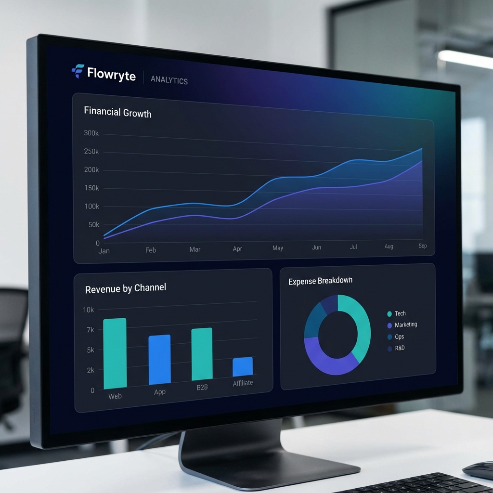
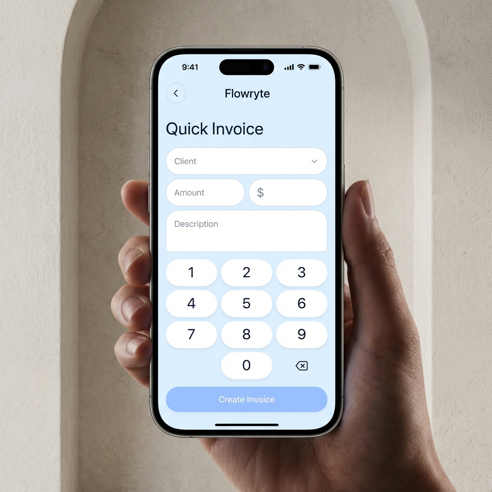

Engineering
Design Blueprint.
Mapping the transition from administrative friction to
enterprise-grade financial autonomy.
01. System Architecture
Data Intake
Ingestion of project milestones and metadata via secure API endpoints.
Transformation
Logic-driven calculation engine for taxation, currency, and branding.
Liquidation
Automated payment delivery and reconciliation orchestration.
02. Process Transformation
A fundamental redesign of the invoicing lifecycle to prioritize velocity and reduce cognitive overhead.
Legacy Loop
Manual template generation (15-30m per cycle).
Aggressive/Awkward manual follow-up emails.
Zero real-time data on upcoming enterprise liquidity.
Disconnected financial logs across siloed apps.
Flowryte Loop
2-Click autonomous branded invoicing logic.
Automated "Smart Nudges" based on viewer activity.
Predictive Analytics for Q3/Q4 runway mapping.
Unified financial OS for 100% data visibility.
Evidence: High-Fidelity Interface

03. Conceptual Origins
Prioritizing UX "Flow" by starting with physical wireframes to ensure natural interaction patterns.
Iterative Discovery
Tested branding logic revealed that "Manual Customization" was the primary
drop-off point. We iterated to "Auto-Branding" which extracts variables from user logos.
Outcome Metric
Implementation of the "Quick-Bill" mobile flow reduced time-to-invoice by
85% compared to desktop-only legacy platforms.
04. Final Utility

Velocity is the
Highest Standard.
Final
Project Impact Analysis 2026